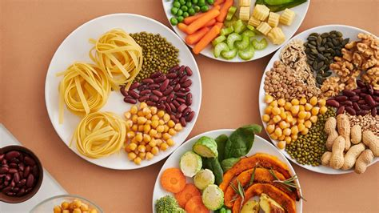

Healthy Eating Habits
Follow these tips for better nutrition:
- Plan your meals ahead of time.
- Include plenty of fruits and vegetables.
- Stay hydrated.
- Limit processed foods and added sugars.
- Make sure to have balanced portions of proteins, carbohydrates, and fats.
Diet Plan 1: Balanced Diet

This diet plan includes a variety of foods to ensure you get all necessary nutrients:
- Breakfast: Oatmeal with fruits and nuts.
- Lunch: Grilled chicken salad with mixed greens.
- Snack: Greek yogurt with honey.
- Dinner: Baked fish with steamed broccoli and quinoa.
Diet Plan 2: Vegetarian Diet
This vegetarian diet plan is rich in fruits, vegetables, and plant-based proteins:
- Breakfast: Smoothie with spinach, banana, and almond milk.
- Lunch: Chickpea salad with cucumbers, tomatoes, and feta cheese.
- Snack: Hummus with carrot and cucumber sticks.
- Dinner: Stir-fried tofu with mixed vegetables and brown rice.